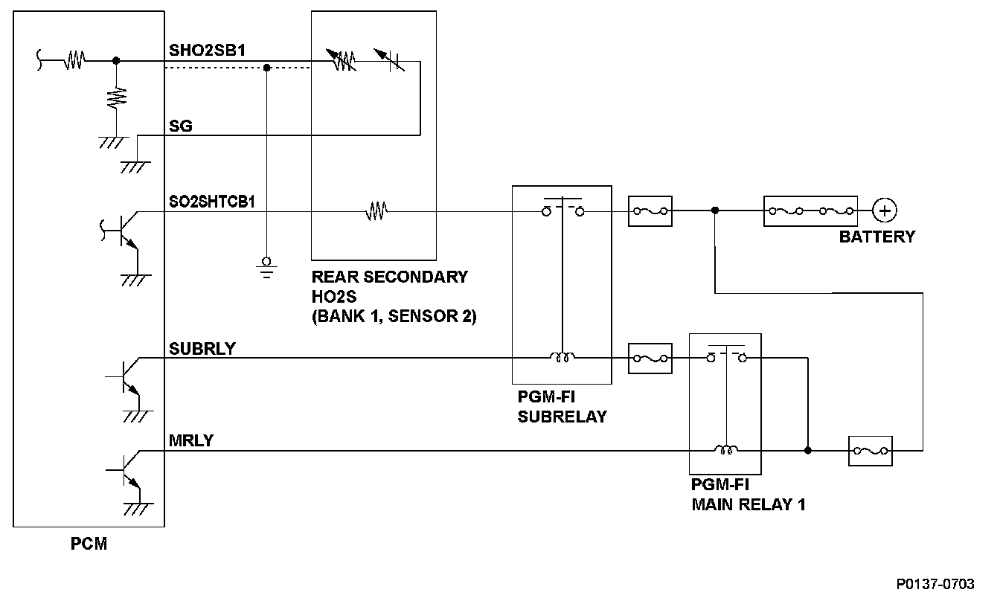
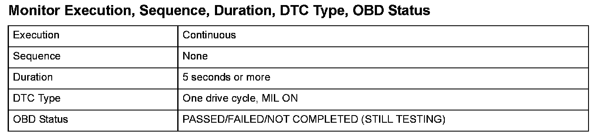
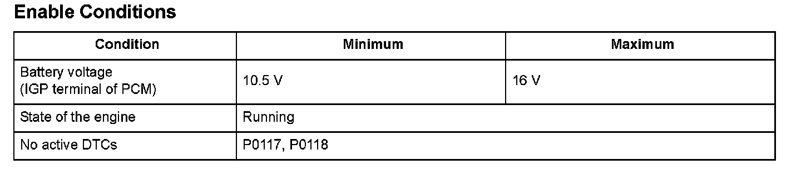

Advanced Diagnostics
DTC P0141: Rear Secondary Heated Oxygen Sensor (Secondary HO2S (Bank 1, Sensor 2)) Heater Circuit Malfunction
General Description
A heater for the zirconia element is embedded in the rear secondary heated oxygen sensor (secondary HO2S (bank 1, sensor 2)), and it is controlled by the powertrain control module (PCM). When activated, it heats the sensor to stabilize and speed up the detection of oxygen content when the exhaust gas temperature is cold.
If the rear secondary HO2S heater draws more or less than a specified amperage, the PCM detects a malfunction and a DTC is stored.

Monitor Execution, Sequence, Duration, DTC Type, OBD Status

Enable Conditions
Malfunction Threshold
The rear secondary HO2S heater output is 0.38 A or less, or 3.33 A or more, for at least 5 seconds when the heater is on.
Driving Pattern
1. Start the engine. Let it idle until the radiator fan comes on.
2. Drive the vehicle at a steady speed of 35 mph (57 km/h) or more for at least 5 seconds.
- Drive the vehicle in this manner only if the traffic regulations and ambient conditions allow.
Diagnosis Details
Conditions for illuminating the MIL
When a malfunction is detected, the MIL comes on and the DTC and the freeze frame data are stored in the PCM memory.
Conditions for clearing the MIL
The MIL will be cleared if the malfunction does not recur during three consecutive trips in which the diagnostic runs.
The MIL, the DTC, and the freeze frame data can be cleared by using the scan tool Clear command or by disconnecting the battery.